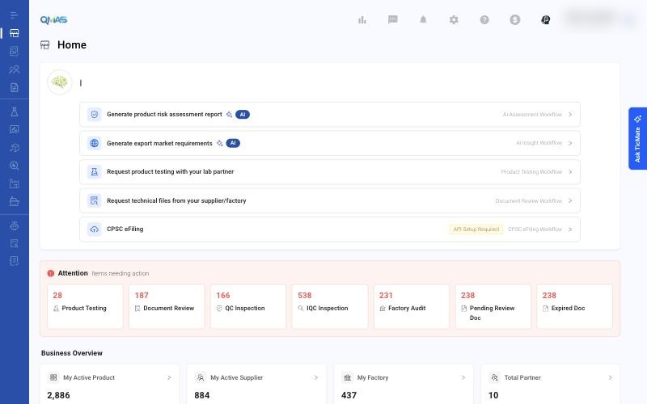
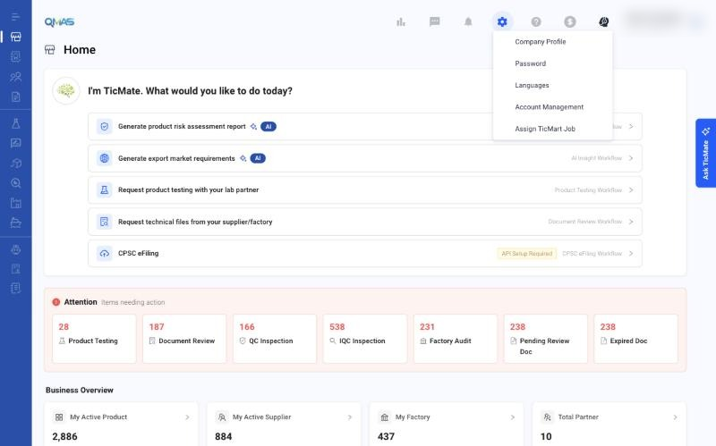
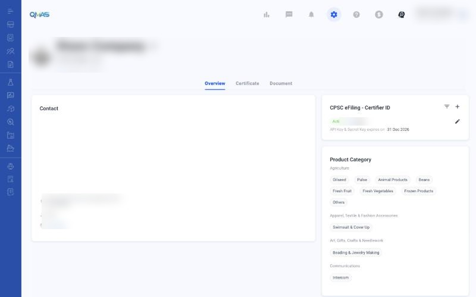

Getting Started — Home, Settings and Company Profile
Find your way around QMAS: the Home page, the top bar and your company settings.
Overview
- Home shows quick workflows, items that need your attention, and an overview of your business.
- The left menu opens each module.
- The top bar has analytics, messages, notifications, settings, help and credits.
- Settings (gear icon) opens Company Profile, Password, Languages, Account Management and Assign TicMart Job.
Step-by-step
1. Home
TicMate asks “What would you like to do today?” and lists quick workflows:
- Generate product risk assessment report (AI Assessment workflow).
- Generate export market requirements (AI Insight workflow).
- Request product testing with your lab partner (Product Testing).
- Request technical files from your supplier/factory (Document Review).
- CPSC eFiling. If it shows “API Setup Required”, set up your Certifier ID in Company Profile first.
Attention counts the items that need action in each module, such as Product Testing, Document Review, QC Inspection, IQC Inspection, Factory Audit, Pending Review Doc and Expired Doc. Click a card to see them.
Business Overview shows your active products, suppliers, factories and partners. Click › to open the list.
Ask TicMate on the right edge opens the TicMate assistant.

2. Settings menu
Click the gear icon in the top bar:
| Option | What it does |
|---|---|
| Company Profile | Company details, certificates, documents, product categories and CPSC eFiling Certifier ID. |
| Password | Change your password. |
| Languages | Change the system language. |
| Account Management | Manage your company's user accounts. |
| Assign TicMart Job | Assign jobs from the TicMart marketplace. |

3. Company Profile
Click the pencil icon next to the company name to edit it. The Overview, Certificate and Document tabs hold your company information. CPSC eFiling - Certifier ID is where you add and manage the API key for eFiling. Product Category lists the categories your company works with.

Tips
FAQ
- How do I change the language?
- Click the gear icon in the top bar, then Languages.
- How do I change my password?
- Click the gear icon in the top bar, then Password.
- Where do I edit my company information?
- Click the gear icon, then Company Profile (https://qmas.icw.io/company-profile).